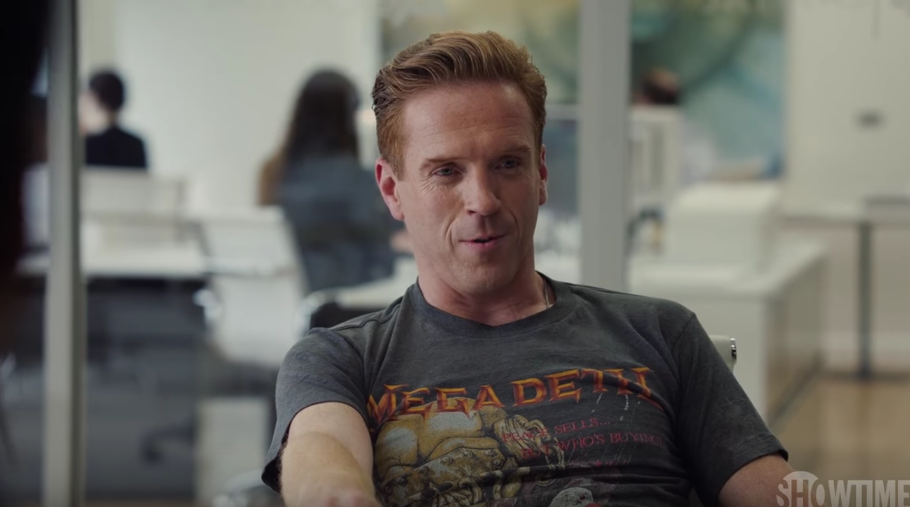
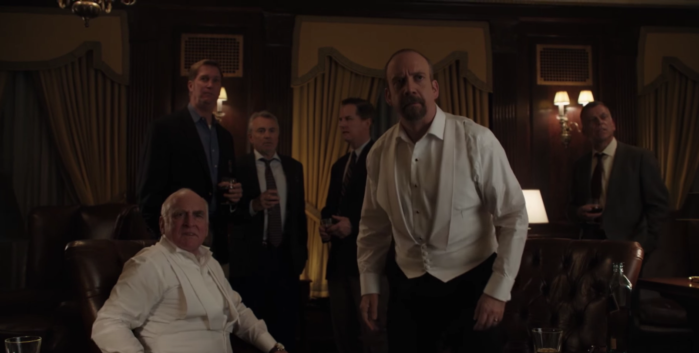

01
01EPISODE 01 / Risk Management
重开的大门，收紧的关系
公司重新开门，阿克斯用更严的规则面对失控感；查克则成为职业责任调查的对象。温迪拒绝被重新占有，泰勒用不同方法解决交易难题；五百万美元与一百二十七项诉讼把风险推向检方。
打开本集图解 ↗职位、信任与家庭，成为每次较量重新定价的筹码。
十二集，追踪每一次选择怎样改变下一步。
三幕剧情、真实配图、分阶段人物关系、消息与选择路径、对照深读和台词卡。场景解读默认展开；单集在新标签页打开。
各篇包括前季必要背景与截至 S02 对应集的剧情。不使用后集解释当前行动。目录完整展示各集配图与导读，导读也涉及对应剧情。请按已观看的集数选择。
01公司重新开门，阿克斯用更严的规则面对失控感；查克则成为职业责任调查的对象。温迪拒绝被重新占有，泰勒用不同方法解决交易难题；五百万美元与一百二十七项诉讼把风险推向检方。
打开本集图解 ↗泰勒从对手发言与卫星图像找出做空线索，阿克斯开始承认这位局外人的价值。温迪接受奖金调查，也提醒查克改变方向；一场针对政府朋友的公开调查让解职暂缓，却把更大的责任带进办公室。
打开本集图解 ↗阿克斯把泰勒推上慈善牌桌，温迪则为克拉科提供辅导。检方利用空乘对刑责的恐惧寻找博伊德弱点，查克卖书接受分居现实；10、9底牌赢得的比赛，最终映出老板不能放下的人与私人旧怨。
打开本集图解 ↗
04阿克斯借慈善誓言争取NFL接纳，查克借表面让步恢复博伊德案的取证机会。温迪评估火星候选人，也重新理解自己的工作；瓦格斯的求助与两名主角的正式取证，将“准备好了”推到真实压力之下。
打开本集图解 ↗阿克斯要在三天内挽回负收益，奈拉交易迫使他联合旧敌；查克耐心等待一段国债操纵录音。瓦格斯与温迪的会谈，则提出另一种可能：承认人的有限，是否真的会失去价值？
打开本集图解 ↗博伊德案进入陪审员遴选，查克争取到停止内部调查的空间；温迪开出回归公司的条件。阿克斯买下赌场所需土地，却在以为障碍已清时，发现还有一种自己尚未掌握的决定权。
打开本集图解 ↗ 07
07博伊德案的胜利让查克试探选举可能，桑迪科特却让阿克斯考虑强制追债。泰勒解释代价，丹泽格提出异议，温迪坚守边界；决定最终仍落回那个有权说“执行”的人。
打开本集图解 ↗
08弗利把查克挡在门外，又看着他如何处理竞选对手；阿克斯从供应商摸到主人家，仍被拒绝接纳。温迪劝泰勒保留感受，自己却停在一次未完成的坦白前。照片传来后，两位对手再度正面相逢。
打开本集图解 ↗ 09
09生日礼物让阿克斯在安全与冒险之间重作选择；桑迪科特 调查却让查克撞上政治盟友的保护圈。温迪赴宴意外拆穿一个婚姻谎言，而一笔 Ice Juice 投资开始进入罗兹家的信托。
打开本集图解 ↗ 10
10劳拉留下纸条，带着孩子离开；阿克斯在寻找、怀念和威胁之间失去平衡。查克接受 明查克 的深度审查，泰勒补写 Klaxon 做空理由。两次回家在同一夜发生，关系却没有得到同一种修复。
打开本集图解 ↗ 11
11Ice Juice 上市一路冲高，阿克斯等待攻击信号，泰勒面对第一次裁员。温迪在警告丈夫失败后也加入做空。当股价与信托一同坠落，结尾的倒叙才把 博伊德 的传话和戴克的新职放回更早的安排。
打开本集图解 ↗被捕预警让阿克斯在清理材料、安排公司和向孩子坦白之间奔走。戴克拒绝查克的条件，却在追捕受挫后重新求助。纪念池边，温迪接住阿克斯的道歉；拘留室里，两名对手各自计算这场胜利的价格。
打开本集图解 ↗